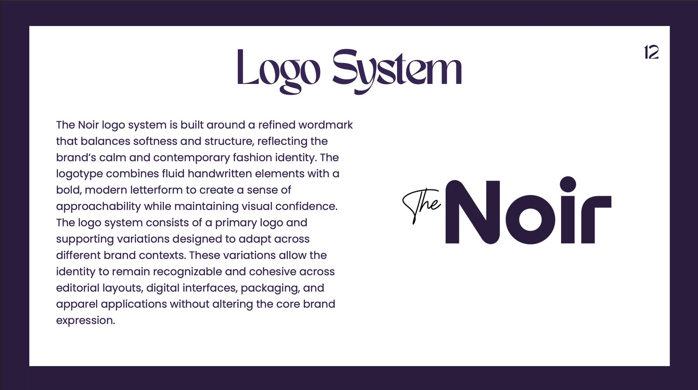
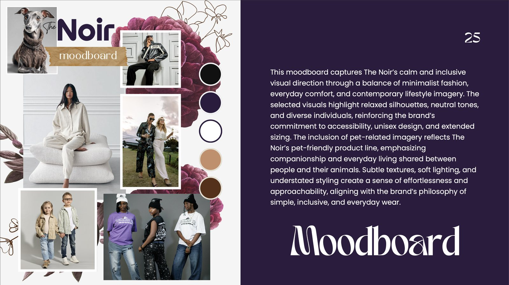
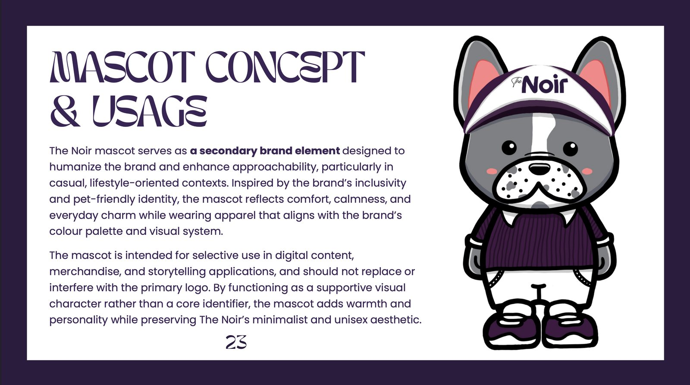

← All work

Fashion Brand Identity · Motion · Team
The Noir
A contemporary, inclusive apparel brand — unisex silhouettes, sizing up to 5XL, and coordinated collections for adults, kids and pets. Simple. Inclusive. Everyday.
Fashion Brand Identity · Motion · Team
A contemporary, inclusive apparel brand — unisex silhouettes, sizing up to 5XL, and coordinated collections for adults, kids and pets. Simple. Inclusive. Everyday.
Role
Brand identity, mascot & motion
Type
Team project
Output
47-page brand guideline
Sector
Inclusive fashion
Overview
The Noir was created from a simple belief: simplicity should feel welcoming, not exclusive. The brand offers understated, comfortable everyday wear designed for diverse bodies, genders and lifestyles. My job was to give that philosophy a calm, scalable visual identity — including a mascot and light motion system — that holds together across editorial, digital, packaging and apparel.
The problem
The fashion market chases fast trends and narrow standards, leaving many bodies and lifestyles unserved. As a brand spanning adults, kids and pets across many platforms, The Noir risked an inconsistent identity that would weaken recognition and dilute its core values of inclusivity, simplicity and practicality.
Approach
I anchored the system in Deep Purple #2B1B3F — refined and gender-neutral — supported by black and off-white, with TAN Meringue for expressive headlines and Poppins for clean, accessible body copy. The wordmark balances a soft handwritten feel with structure, signalling approachability and confidence at once.
A friendly mascot humanizes the brand's inclusive, pet-friendly spirit, while a restrained animation system adds warmth in digital contexts — both designed to support, never overpower, the core identity.
#2B1B3F#111111#F5F5F5#8E8E8EProcess




The identity applied across fashion campaign visuals.
Results & impact
The work produced a comprehensive 47-page brand guideline and a cohesive identity that scales cleanly across editorial layouts, digital interfaces, packaging and apparel.
The payoff is a clear, recognizable and genuinely inclusive market position — and the consistency that protects brand equity as The Noir grows across new audiences and touchpoints.
Reflection
Designing for inclusivity pushed me to strip away anything decorative that didn't serve the message. The most inclusive design here is also the most disciplined — calm, neutral, and built to flex.